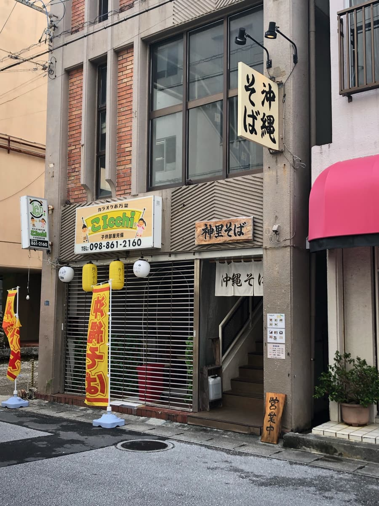
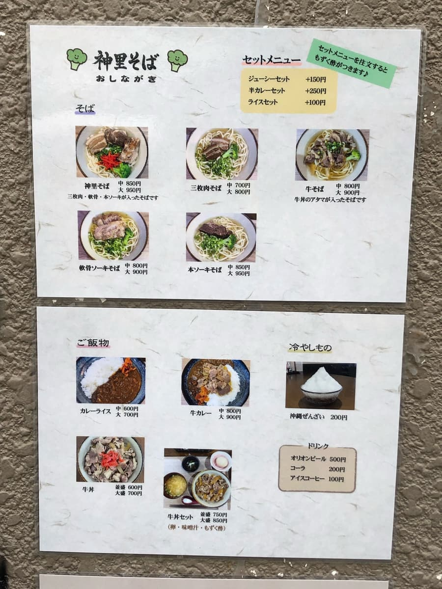
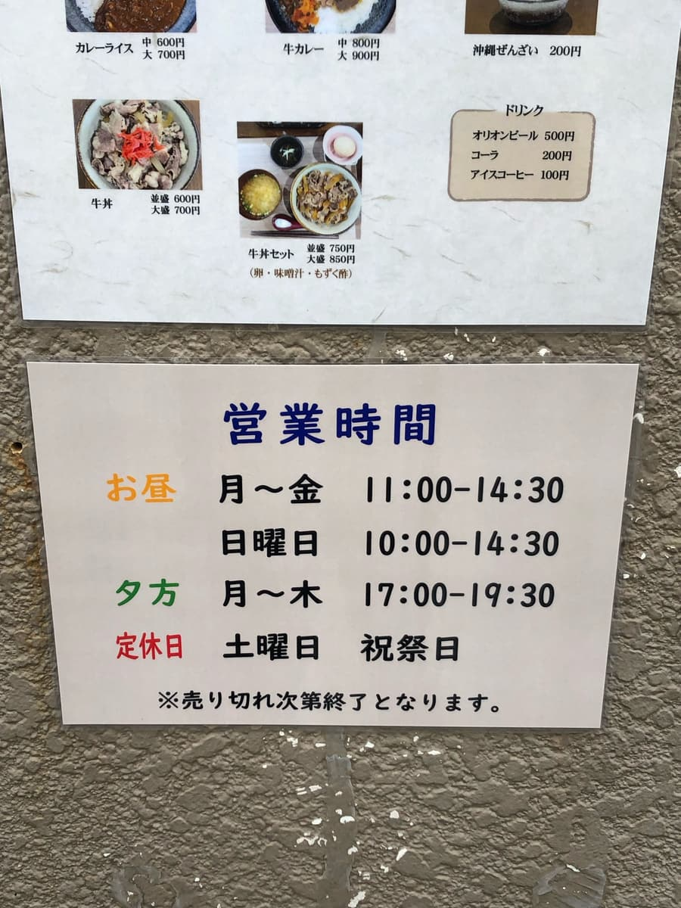
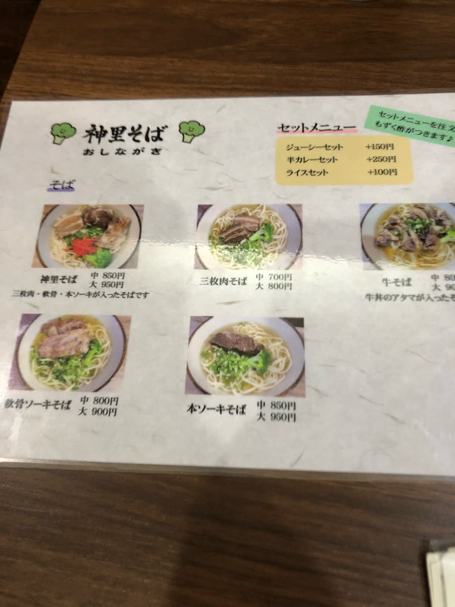
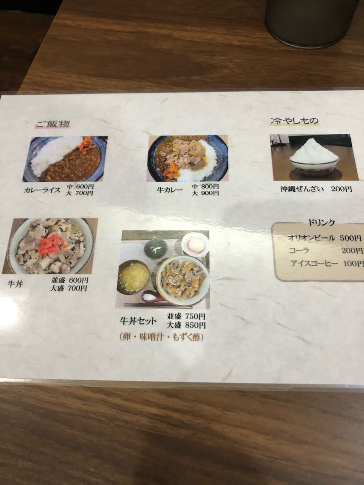
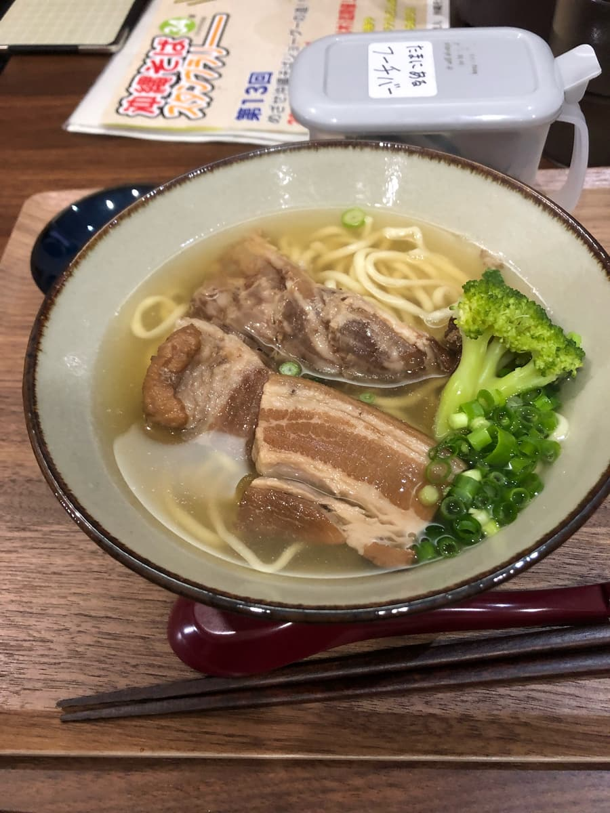
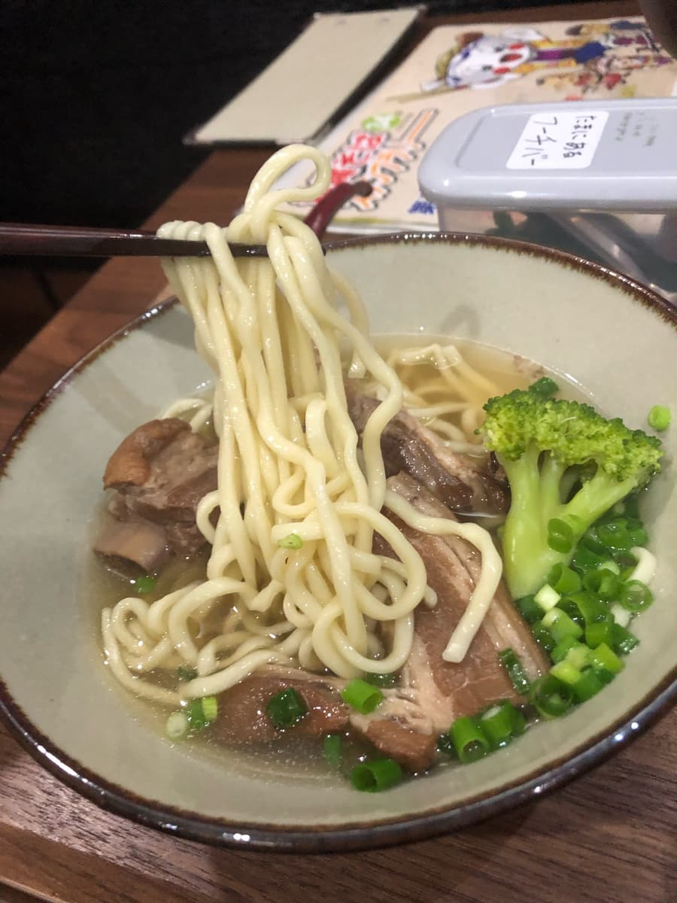

2023.12に食べました。こちらのお店は「第13回沖縄そばスタンプラリー（2023.10.1～2024.2.29）」の参加店で、30店舗目/34店舗として行きました😊


こちらの沖縄そば、スタンプラリー冊子の写真や、メニュー表でも分かりますが、具材にブロッコリーが入っているようで、メニュー表のイラストにも描かれていますね😆 他店にはない具材ですね😄



今回の注文もスタンプラリー冊子で紹介されていた「神里そば」を注文。

まずはスープを一飲み。スタンプラリー冊子で紹介されていたとおり、鰹出汁＋豚骨ダシの合わせで、鰹が効いた優しい味です😁

次に麺を頂きます😄 自家製生麺は細麺のストレートタイプでもちもちです。ブロッコリーは他店にはない具材で珍しいですね😄
肉は三枚肉、軟骨ソーキ、本ソーキが入っていますが、特に三枚肉は筋感が残っている感じでした。
評価（9点/15点）：普通に美味しいです。国際通り（久茂地付近）にあるので、観光等でこの辺に寄った際に如何でしょうか？駐車場はないですが、すぐ近くにコインパーキングあります。また、キャッシュレス（PayPay）対応も出来ていて、トイレもとてもきれいでした。
麺 ：★★★☆☆（3）
スープ：★★★☆☆（3）
具 ：★★★☆☆（3）